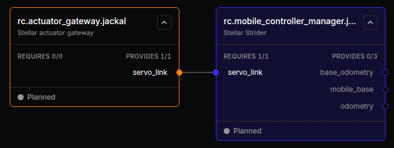
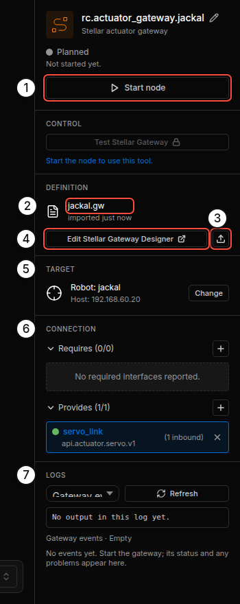
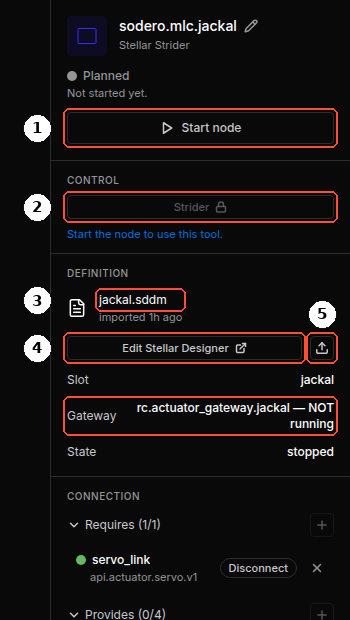
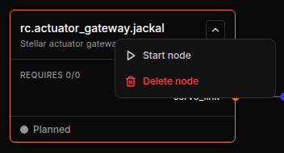
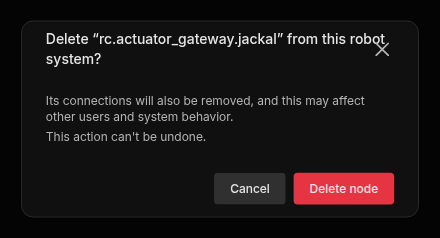
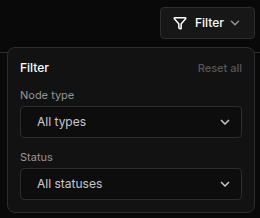

Nodes and Connections¶
A Station is a graph of nodes connected through ports. This page shows how to add nodes, connect them, and rename or delete them. See Key Concepts for what the node types mean.
1. Add a Node¶
- Click Add node in the toolbar (or right-click the empty canvas).
-
Choose a node type ①, select a module ② and click Next ③.

Gateway › Actuator gateway -
Enter a node name ① and click Add node ②. You can rename the node later in the inspector.

Naming the node
The new node appears on the canvas in the Planned state. It is saved with the graph, but nothing runs until you start it.
Node Types and Modules¶
| Type | Module | Node ID | Typical use |
|---|---|---|---|
| Gateway | Actuator gateway | rc.actuator_gateway.NAME |
Motors and drives, real (EtherCAT) or simulated (Isaac Sim) |
| IMU gateway | rc.imu_gateway.NAME |
IMU and foot-contact data | |
| Camera gateway | rc.camera_gateway.NAME |
An RGB-D camera | |
| Controller | Motion Studio | rc.controller_manager.NAME |
Manipulators |
| Strider | rc.mobile_controller_manager.NAME |
Wheeled mobile bases | |
| Articulation | rc.articulation_controller_manager.NAME |
Articulated robots with direct joint control | |
| Legged locomotion | rc.legged_locomotion.NAME |
Walking robots driven by a walking policy | |
| Localizer | rc.localizer |
Map-based localization (one per Station) | |
| Visual odometry | rc.visual_odometry |
Camera-based odometry (one per Station) | |
| Navigator | rc.navigator |
Path planning and goal following (one per Station) | |
| Compound | Your compound modules | Several robot units combined into one system | |
| Application | Your application modules | Robot behaviors and task logic |
Modules marked SODERO are built in. Modules you installed on the Modules page are marked CUSTOM and appear under the type they declare. Each type also lists a … subsystem entry (Empty draft subsystem): it adds an empty placeholder node with no program behind it, for sketching a system, and that node cannot be started.

Name rules. Gateway names are converted to lowercase. Controller names (Motion Studio, Strider, Articulation, Legged locomotion) start with a lowercase letter and use lowercase letters, digits and _, at most 20 characters. The Localizer, Visual odometry and Navigator have fixed names.
Tip: Give a robot's gateway and controller the same name, for example rc.actuator_gateway.jackal and rc.mobile_controller_manager.jackal. The graph stays easy to read, and Auto-connect finds the right partner.
2. The Node Card¶


| Part | Meaning |
|---|---|
| Title and module | The node ID and its module, for example rc.actuator_gateway.jackal / Stellar actuator gateway. A running controller shows a link to its UI here. |
| REQUIRES n/m | Ports this node needs from other nodes: connected / total. Required ports sit on the left edge of the card. |
| PROVIDES n/m | Ports this node offers: ports with at least one connection / total. They sit on the right edge. |
| Status | The node's state, such as Planned, Operating or Error (Running Nodes). |
The card border has the color of the node type: orange for gateways, blue-violet for controllers, purple for compounds and mint for applications.
3. Connect Ports¶
Connect a required port to a provided port of another node. There are three ways:
- Drag from one port dot to another. While you drag, compatible ports pulse blue and incompatible ones turn red.
- Click one port, then the other.
- In the inspector of the node that requires the port, click Auto-connect next to the port. The Station picks the matching provider.
The Station accepts a connection only when the two ports are on different nodes, one requires and the other provides, and both use the same contract (the interface type shown under the port name in the inspector, for example api.actuator.servo.v1). It also enforces the system structure:
- Only a controller may use a gateway.
- An application uses controllers or compounds, never gateways directly.
- An actuator gateway serves one robot controller (Motion Studio, Strider or Articulation) at a time.
Common Connections¶
| Node (requires) | Port | Connect to (provides) |
|---|---|---|
| Motion Studio, Strider, Articulation | servo_link |
Actuator gateway servo_link |
| Legged locomotion | servo, imu |
Articulation articulation, IMU gateway imu |
| Localizer | camera, odometry |
Camera gateway camera; Strider or Visual odometry odometry |
| Visual odometry | camera, imu (optional) |
Camera gateway camera; IMU gateway imu |
| Navigator | mobile_base, localization, map |
Strider mobile_base; Localizer localization and map |
To remove a connection, select the node and click Disconnect next to the port in the inspector.
Tip: A Motion Studio node can drive actuators of several gateways. Click + Gateway link in its inspector to add another servo_link port.
4. The Inspector¶
Click a node to open its inspector. The sections depend on the node type.




| Section | Contents |
|---|---|
| Header | Node name (pencil icon to rename), module, state, and Start node / Stop node |
| CONTROL | Buttons that open the node's tool: Stellar Motion Studio, Strider, Articulation for controllers; Test Stellar Gateway for gateways. They unlock once the node runs. |
| DEFINITION | The node's design document: file name and when it was imported, Edit Stellar Designer / Edit Stellar Gateway Designer, and the upload icon to import a file (Design Documents) |
| TARGET | Simulation gateways only: the robot name in Isaac Sim and the simulator address (Simulation Gateway) |
| Settings | Camera, IMU, visual odometry, localizer, navigator and legged locomotion nodes: their settings form |
| CONNECTION | Requires and Provides ports with their contracts, Auto-connect and Disconnect |
| LOGS | Output and events of the node (Running Nodes) |
5. Rename and Delete¶
- Rename: stop the node, then click the pencil icon next to the node name in the inspector.
- Delete: stop the node, then right-click it and choose Delete node. The node and its connections are removed from the graph.




Deleting a node cannot be undone. Export the Station first if you may need the node again (Backup and Restore).
6. Find Nodes in a Large Graph¶
- Filter shows nodes of one type or status.
- Fit view zooms to show every node; Auto layout arranges the nodes by their connections.
- The N issues chip at the left of the toolbar lists problems such as unconnected required ports; Locate jumps to the node.

